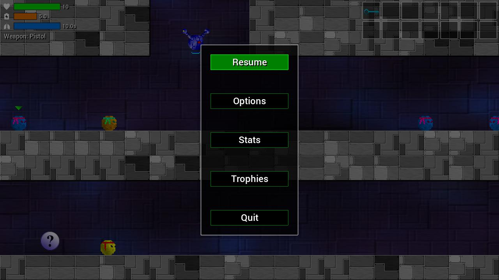

Gameplay Manual
Last updated: 2nd April 2018
Table of Contents
Introduction
Blob Wars : Attrition is a mission and objective-based 2D platformer. It is the third entry in the Blob Wars series and is set between the events of Metal Blob Solid and Blob and Conquer. The story centres around an alien invasion of the Blobs' homeworld and their fight back against the aggressors. Many of Bob's fellow blobs have been assimilated by alien technology and become evil. During the game, you take control of a blob named Bob, whose mission it is to rescue MIA and fight back against the enemy. The gameplay is non-linear, allowing the player to tackle missions in any order they like.
Quick Start Guide
To quickly start playing the game:
- Run the Blob Wars executable (./blobwarsAttrition on Linux, blobwarsAttrition.exe) on Windows).
- Choose New Game and select a save slot.
- On the world map screen, use the mouse or keyboard control to select the Beach Approach tutorial mission.
- Play and complete the training mission to proceed with the game (or quit the mission to proceed more quickly).
Controls
Blob Wars : Attrition supports both keyboard and joypad controls. A joypad must be connected to the machine before the game is started up in order for the game to correctly detect it.
The game's default controls are listed below. These can all be changed by going to the Options screen and selecting "Controls ...". See the Options section of this manual for more information.
| Up | W |
| Down | S |
| Left | A |
| Right | D |
| Fire | J |
| Jump | I |
| Jetpack / Aqualung | L |
| Pause | P |
| Radar | Tab |
Various menus can also be access by pressing Escape in individual game sections. See Hub and and Main Mission for more details.
Gameplay
Most missions in the game feature multiple objectives which are listed at the start of the level. Those objectives listed in red are required to be completed. Those listed in white are optional and can be completed at any other time. Once all the objectives have been completed, the mission will automatically end and the player will be returned to the World Map. They can then choose to return to the mission again, to complete all the outstanding objectives and collect keys that they missed before.

- Health, Power, Oxygen, and Weapon
- Inventory
- Bob (the player)
- An enemy Blob
- An enemy EyeDroid
Bob starts the game with 10 health points, which are depleted as he takes damage. When Bob's health is reduced to 0, he is killed and the mission is failed. Picking up cherries will help to regain health (see further below for more information). Bob also has a power level, that is used by both the aqua lung and jetpack. This can be replenished by picking up batteries (see further below for more information). It also naturally regenerates over time.
Pressing Escape anytime during gameplay will bring up a menu, allowing you to access options, stats, trophy information, and to also quit the mission.
- Resume: continue playing the game.
- Options: access the options screen.
- Stats: view various gameplay stats.
- Trophies: view the trophies earned and outstanding.
- Quit: quit the current mission.
The result of quitting a mission and returning to the hub depends on the current status of the mission. If the mission has never been completed, all progress will be lost and the mission will need to be restarted. If the mission has been completed before, all progress will be saved and any keys found will be taken along with the player (note that some items will be dropped in place).
Weapons
A number of weapons are at Bob's disposal:
- Pistol: Bob's starting weapon. Slow to fire, but unlike all the rest can be used underwater.
- Plasma Rifle: A rapid-firing gun that does slightly more damage than other guns in the game.
- Spread Gun: Fires three shots in a spread effect. Most useful in wide open spaces and for hitting enemies that are slightly out of reach.
- Laser: Cuts through enemies and bounces off walls Causes tremendous amounts of damage.
- Grenades: Bounce and explode on contact with enemies. Causes plenty of damage (some enemies, such as cannons, are immune to the explosion).
Cherries and Batteries
Cherries and batteries restore Bob's health and power respectively. Each come in different sizes, topping up the health and power by different amounts. A small cherry and a weak battery will refill Bob's gauges a small amount, while a bunch of berries and a full battery will restore much more. You should collect cherries and batteries as often as you can, to keep your health and power as high as possible.
Flying and Swimming
From the start of the game, Bob is equipped with a jetpack and aqualung. When activated, the jetpack will allow Bob to fly for a short period of time, allowing him to reach higher and more distant areas. The jetpack draws on power reserves when it is activated and will automatically cut out once the power levels reach 0. When in water, Bob can swim. Swimming will slowly reduce his oxygen levels. Once the level reaches 0, Bob's health will rapidly decrease. Getting out of the water will regenerate Bob's O2 levels. Bob can also activate his aqualung to swim for longer. The aqualung will draw on Bob's power reserves and will cut out as soon as the power levels reach 0.
Keys
Keys and keycards to open doors can be found scattered throughout the missions in Attrition. Spare keys not used in a level are carried between levels once the mission ends (or the player quits). This is important, as not all the doors on one level will have a matching key. For example, a level might contain two gold doors, but only one gold key. In this instance, the player would need to find a gold key on another level.
MIAs
In some missions, Bob will encounter MIA blobs. These are your war buddies who have become too shell shocked to return home and are in need of rescue. Returning them home is easy: just walk into them. MIA blob don't attack enemies and cannot be hurt by gun fire (friend or foe), so don't worry about stray fire hitting them!
Water, Slime, and Lava
Water, slime, and lava are present in the Blobs' world. While Bob can swim in water and not suffer any ill effects (aside from drowning, if his oxygen runs out), slime and lava will reduce Bob's health if he falls in it. Slime will reduce Bob's health by 1 point, while lava will remove 2 points of health. Both should be avoided.
Hearts and Cells
Hearts and cells are special items that will increase Bob's maximum health and power by 1 point each. These items are unique and can be found in most levels in the game. Upon collecting a heart or cell, Bob's health or power will be immediately increased and restored to the new maximum. Hearts and cells are often in difficult to reach or out-of-the-way areas. Even so, you should make an effort to find them as quickly as possible as the increases in health and power will aid Bob immensely on his quest.
Teeka
Teeka is a buddy of Bob's who sometimes accompanied him on missions. He can sometimes be found on missions guarding a white keycard that is needed for boss encounters. He will leave once you collect it. Teeka can't be hurt by gun fire, but will attack enemies on sight.
Title Screen

The title screen offers a range of options.
- New Game: starts a new game. You will need to choose a save slot to use. A warning will be shown if you chose an existing save slot, as all of the data will be overwritten.
- Load Game: choose a save game to load. The save slots will display the percentage of the game complete and the time played (in hours and minutes).
- Continue: quickly continue playing the most recently saved game.
- Options: view and configure the game's options. See the Options section for more information.
- Credits: view the game's credits.
- Exit: exit the game.
Hub / World Map
The Hub is where the player can select the next mission to play. A number of pulsing circles will indicate the availability of the mission, as well as the status. A red circle indicates that the mission has yet to be played, while a yellow circle shows that it is partially complete and can be revisited.

- Progress statistics
- An incomplete mission
- A partially completed mission
- Select cursor
To start a mission, use the left, right, up, and down controls to move the cursor around and press fire to select the mission (hint: you can also use the mouse here - left click on a mission to select). The mission screen will show a brief description of what will be involved, and also show any keys that are currently in your inventory. Click the Start Mission button to being the mission or Cancel to back out of the mission detail.

- Mission name
- Mission description
- Available keys (including number of)
- Inventory slots
Main Mission
Upon starting a mission, the objectives for that mission will be displayed. The required objectives for the mission must be completed in order for it to be passed. If the player is killed or the mission is quit, it must be replayed from the beginning.
Objectives / Inventory
At any time during gameplay, pressing Pause will display the mission's current objectives, as well as their progress. It will also display the inventory, showing items carried. Required objectives are displayed in red, completed objectives in green, and other objectives (non-required) in white. Bob may carry up to 14 items (keys only occupy one inventory slot, their numbers stacking). There is no way for Bob to drop items that he is carrying, other than to use them.

- A completed objective
- An incomplete (required) objective
- Incomplete optional objectives
- Inventory
Radar
Pressing the Radar key (Tab by default) during a mission will bring up the radar screen. This will show all an extended area map of the current region. Various blips will be present, marking the location of keys, required mission items, MIAs, and mission targets (such as enemies and objects that must be destroyed). Note that the radar map does not cover the entire mission map and only extends out a little way from Bob's present location. It cannot be scrolled. However, various arrows will point in the direction of out-of-range targets. Following these arrows will lead Bob to his objectives.

- Radar map area
- Blip directional arrows
- Blip legend
Ending the Game
If Bob loses all his health, the mission is failed. At this point, you will have the option to restart the mission or return to the hub. Restarting the mission will reset everything to the way it was when the mission began; keys, items, etc. will be reset to their previous state, including the player's inventory and health bonuses. In the case of a new mission, this will mean restarting from the beginning. If returning to the mission, the player will restart from that point.
Once all missions have been completed, the player will have the option to continue the game in Free Play mode. They may play any mission they like, at any time. The state of the mission will not be saved, however.
Options
The options screen can be access at most times during the game. It allow you to set various preferences using the up, down, left, right controls.

- Fullscreen: activate the fullscreen mode for the game. Note that you must exit and restart the game in order for this change to take effect.
- Window Size: select the window size of the game. Change this if things appear too big or too small. Note that you must exit and restart the game in order for this change to take effect.
- Sound Volume: change the volume of the sound effect. Use the left and right controls to change the levels.
- Music Volume: change the volume of the music. Use the left and right controls to change the levels.
- Blood: whether or not to show blood. When blood is off, enemy blobs won't scream when they die and will also disappear in a puff of white when they are defeated. Blood will not splatter the ground. The Extra option will do the opposite and leave more blood around for longer (this might clutter the screen a little, so be careful with this option).
- Trophy Screenshot: whether or not to save a screenshot when a trophy is earned. The screenshot is saved to the same location as the save files. Be aware that this might cause the game to pause for a moment when the screenshot to saved.
- Trophy Alert: whether or not to show an in-game alert when a trophy is earned. Switching to to Restricted will mean that alerts are not shown during a mission. This option may be best if you find the alerts obscuring gameplay.
- Hud Inventory: whether to show the in-game inventory in the top right corner of the screen during a mission. Turn this off if you find it either distract or is obscuring the gameplay.
- Controls: go to the controls configuration screen. See below for more details.

To change a control, highlight the relevant options and press Return or Space, then press the keyboard control or joypad button of your choosing. Pressing backspace will clear a control setting. Note that menus can always be navigated by using the arrow keys, and by pressing Return or Space.
Hints and Tips
- Seek out Hearts and Cells as much as possible, to increase your health and power.
- You may exit a partially completed mission at any time. Your progress will be saved and any keys found will come with you.
- Enemies in Outposts are stronger and require more hits to take down. Tackle these missions with care.
- When swimming, wait until your oxygen is just about the run out before activating your aqualung. O2 recovers much faster than battery power.
- The pistol is the only weapon that can be fired underwater.
- Later in the game, it may be necessary to return to earlier levels to collect as many keys as possible, in order to proceed.
Misc. Game Info
Blob Wars : Attrition features an in-game trophy system, not unlike the achievement and trophy system found in Steam, Xbox Live, and PSN. This is entirely an offline system and exists purely for fun. Trophies are awarded for things such as completing missions, defeating a certain number of enemies, and rescuing MIAs. You can view the trophies you have earned and those that are outstanding in the hub and mission menus. When a trophy is earned, a notification will appear on the screen. If you find these distracting, you can switch them off in the options screen (or set them to be restricted, so that they do not appear during missions). A screenshot is also saved, which can also be turned off.
License
Please refer to the LICENSE and README.md files that came with this game for information on the various copyrights of the source code, graphics, sound, and data. Additionally, you may visit https://github.com/stephenjsweeney/blobwarsAttrition to get the source code itself, and view the files there.
About
Blob Wars : Attrition is a port of the Android game of the same name. It is the third game in the Blob Wars series of games, that began in 2002.